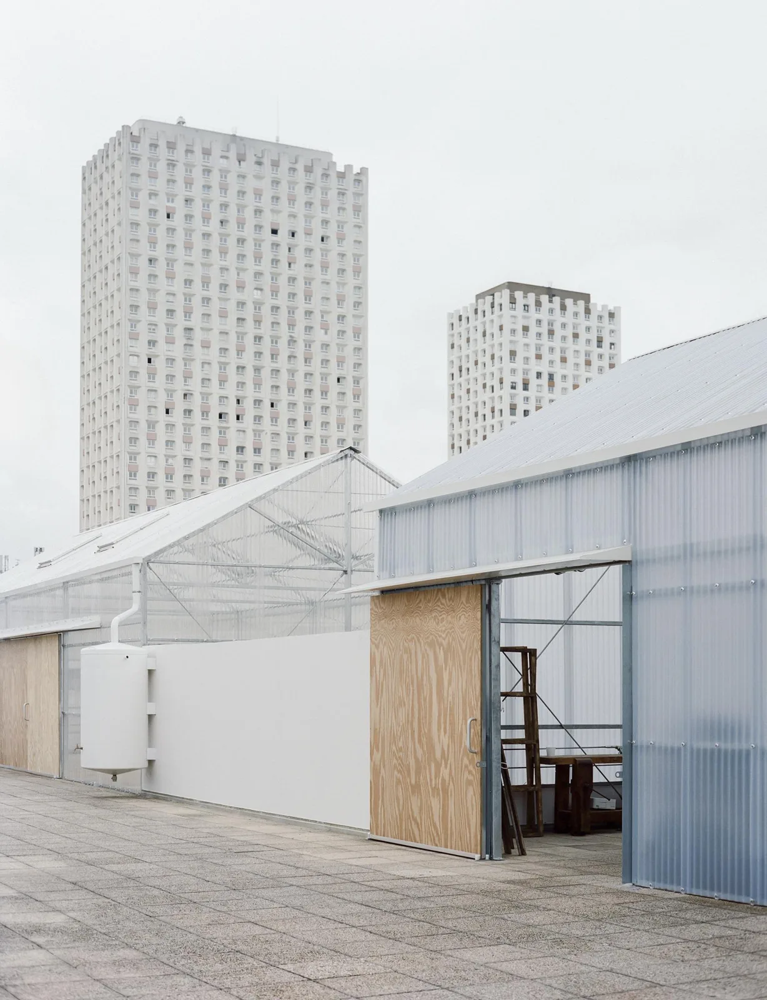
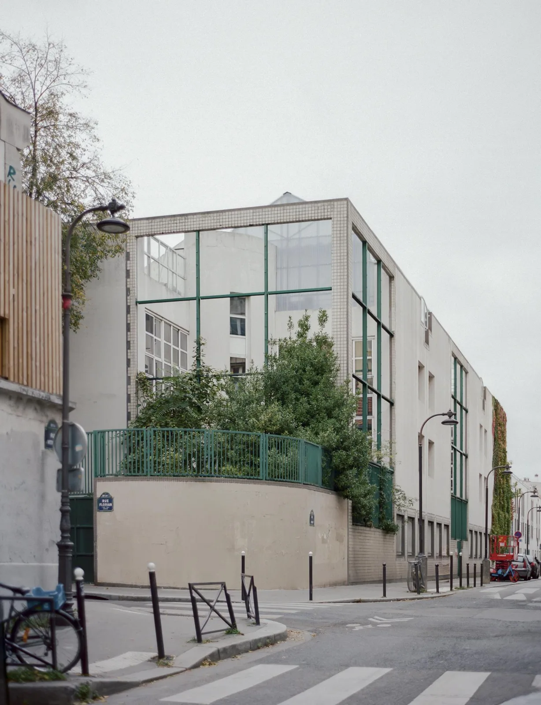
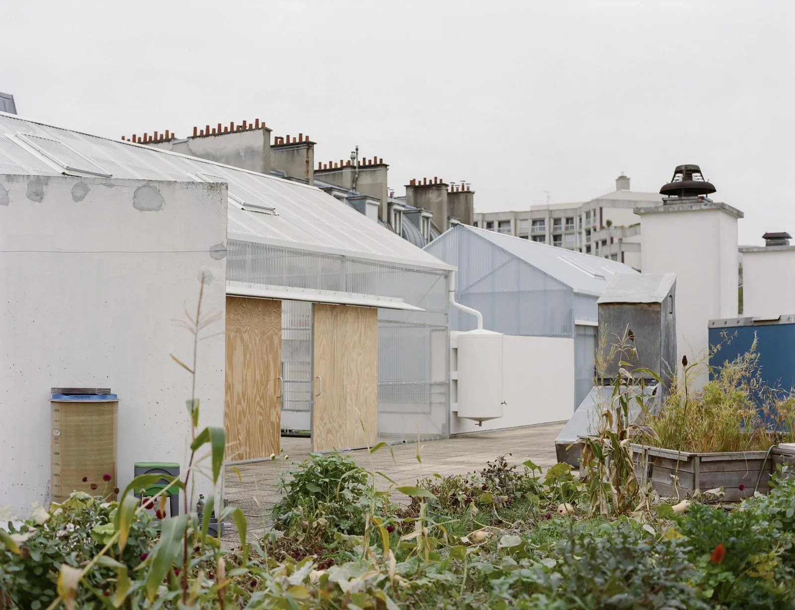
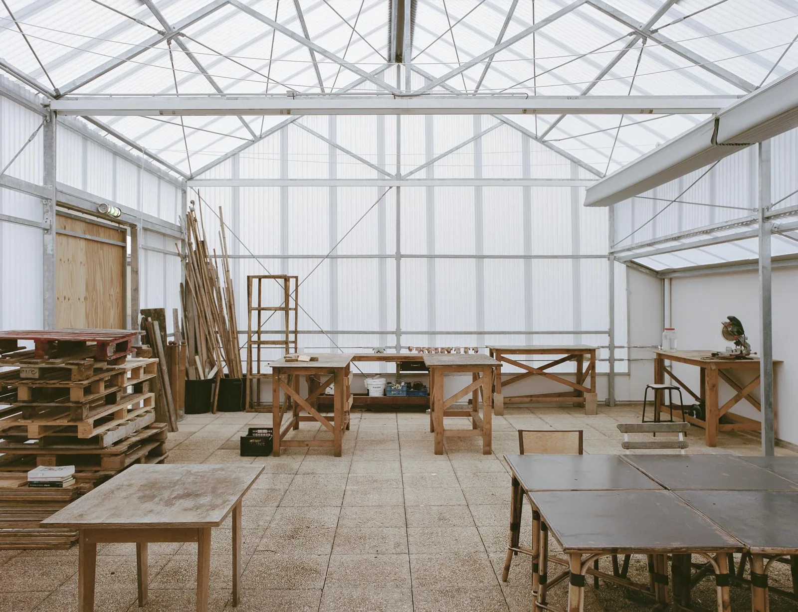
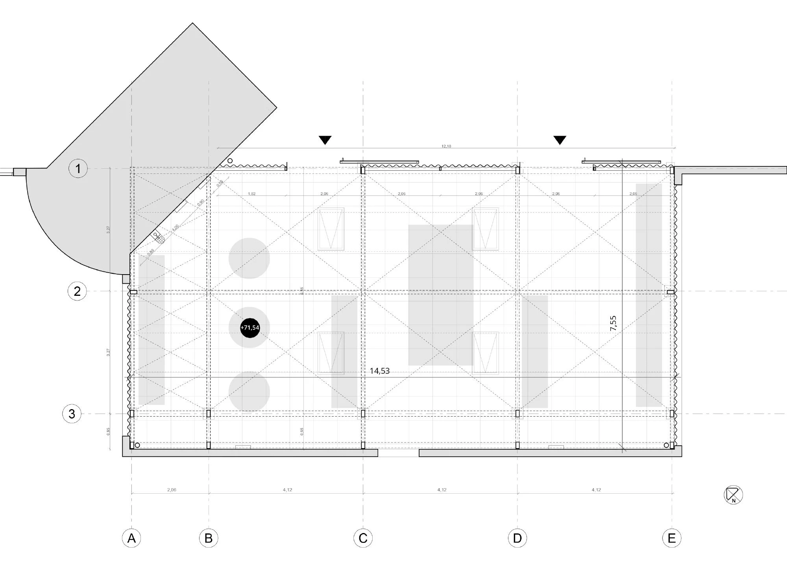
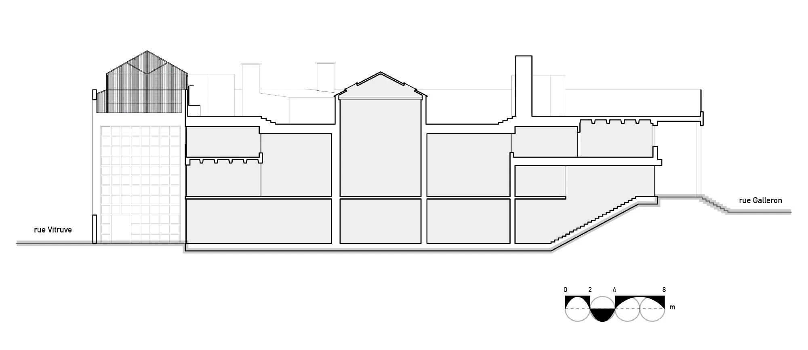
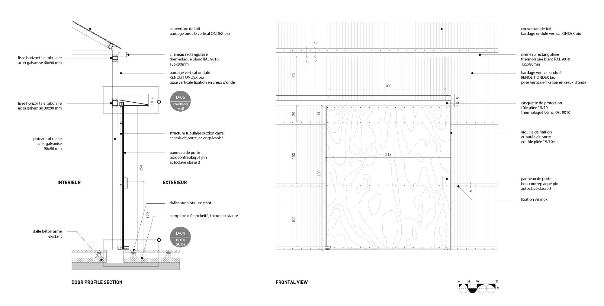
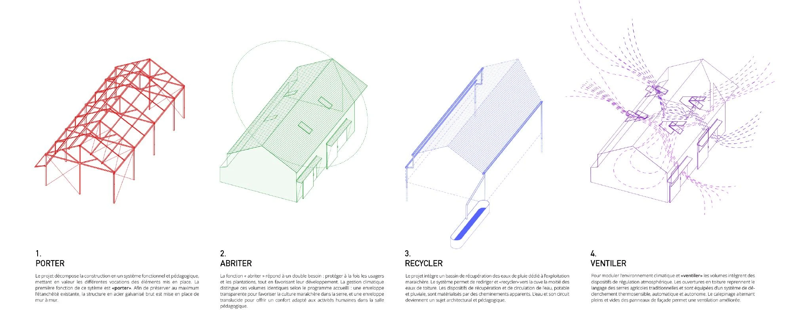

School rooftop farm and teaching pavilion · 2025
Rooftop Educational Farm
rerum architectes
Paris, France
The Veni Verdi association grows fruit, vegetables and flowers alongside the school's educational programme. A greenhouse supports crop production while an adjacent pavilion provides three areas for teaching and learning.
The new steel structure spans between existing walls to limit intervention in the roof waterproofing. Different polycarbonate skins tune the greenhouse and classroom climates, while visible rainwater collection makes the irrigation cycle part of the educational experience.


Relevant connections
Images and drawings / 08













